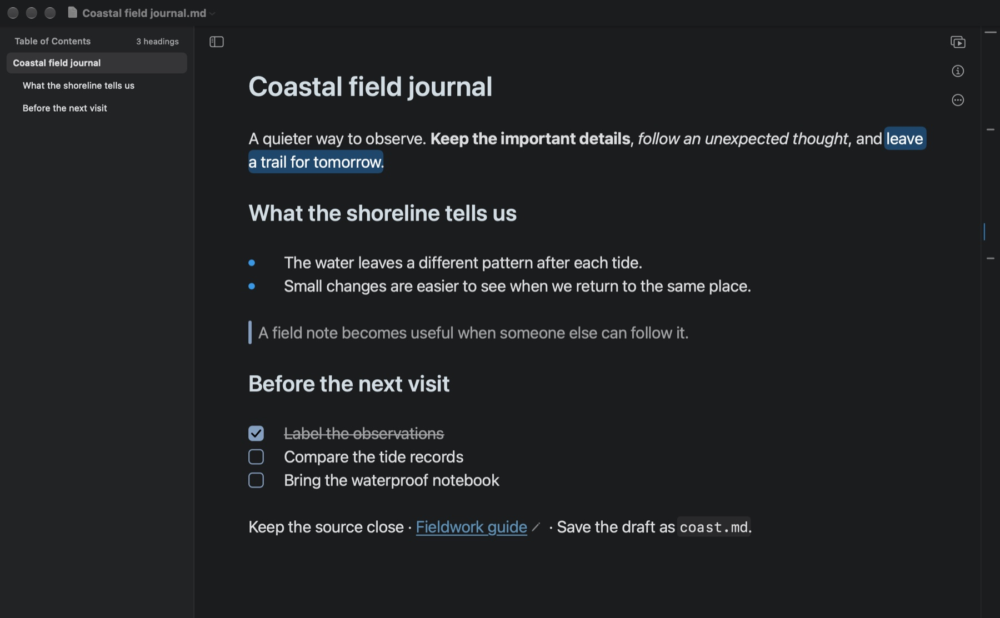
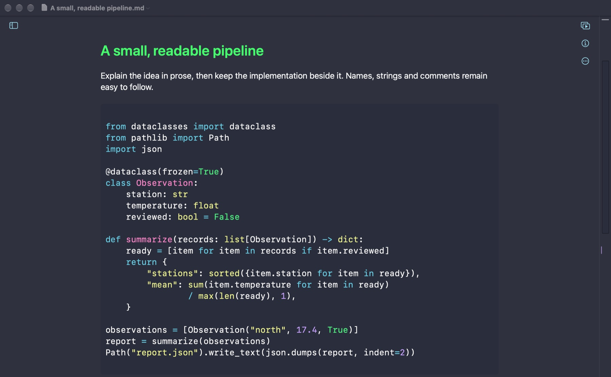
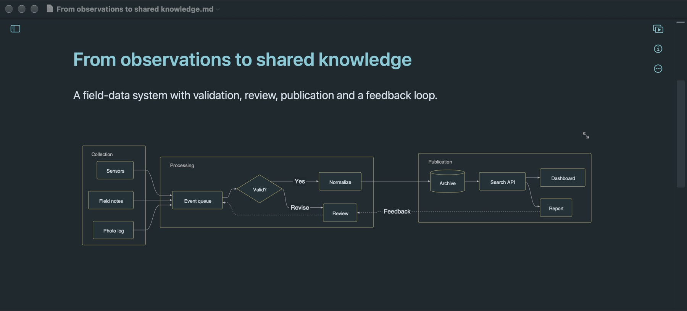
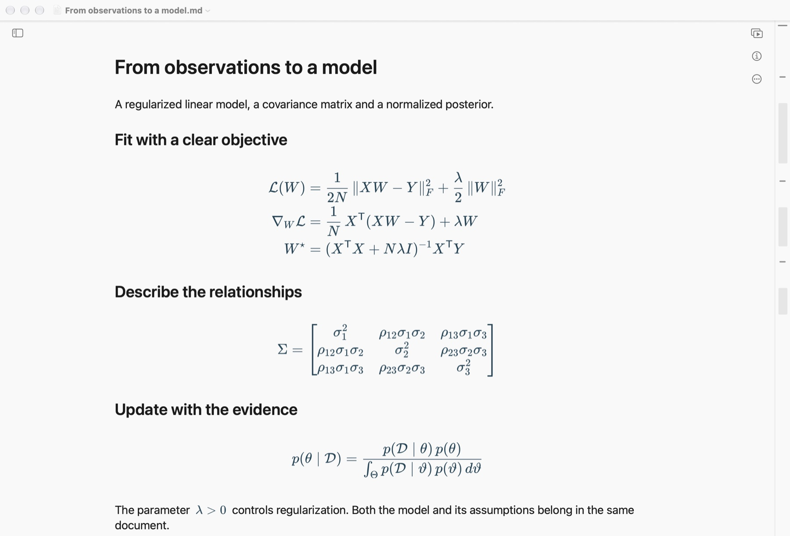
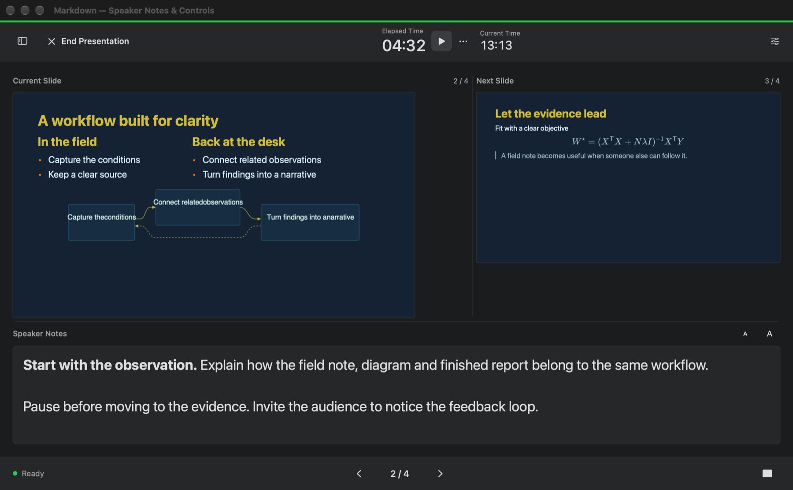

Find your place
Jump between headings, use the document minimap, and make changes with find and replace.
A native home for your ideas. On Mac.
Write the argument. Draw the connections. Walk through the maths. Then turn the same document into a presentation.
macOS 14 or later · Mac App Store release in preparation

Make room for the whole idea
From a first outline to a technical proposal, keep the words and the work together. Headings, tables, checklists, and code take shape while you write.
Code is highlighted by language, with notes right beside the implementation. Proposals, bug write-ups, and tutorials read better.

Describe groups, branches, and feedback loops in Mermaid. Edit the source and the diagram updates with it.

Write math inline or unfold multi-line equations step by step. Matrices, integrals, and derivations render clearly.

Jump between headings, use the document minimap, and make changes with find and replace.
Open and save ordinary Markdown files in a folder you choose. Core editing needs no account.
Export documents as PDF, HTML, Markdown, or plain text. Pro adds more formats.
From the page to the room
Add page breaks to shape your slides, preview them beside your text, and present full screen. Pro adds a separate presenter view with notes, the next slide, and a timer.

Start with the essentials. Grow into Pro.
Free essentials
One-time purchase · Family Sharing
Purchase in the app. Your local price is shown by the App Store before you confirm. There is no recurring subscription.
Here when you need a hand
For help with documents, exports, or a purchase, email the developer. Include your macOS version, app version, and the steps that led to the problem. Only share sample files you are comfortable sending.
entropysniper@gmail.com
Open a .md file on your Mac or create a new document in the app. Save it in a folder you choose. If a folder or attachment is unavailable, check its location and grant access when macOS asks. Keep a backup of important files.
Sign in to the Mac App Store with the Apple Account used for the purchase. Open Markdown, go to Settings → Pro, and choose Restore Purchases. Connect to the internet and complete any Apple sign-in prompt. If access is still missing, contact support with the error message.
Markdown Pro is a one-time, non-consumable in-app purchase with Family Sharing enabled. Eligible family members can use the purchase through Apple's Family Sharing settings. The App Store shows the applicable price and purchase terms before payment.
Local writing and locally stored content work offline. Remote images, link previews, purchases, and restoring purchases can require a connection. Files stored with a separate cloud provider follow that provider's availability.
Document PDF export is included for free. Exporting a slide deck to PDF or PowerPoint requires Pro. Pro also adds Word, RTF, ePub, images, and TextBundle.
Apple handles App Store payments. For an unrecognized charge or a refund request, use Apple's Report a Problem service. The developer cannot view your payment card details or Apple Account password.
Your work stays yours
Updated 7 November 2026
This policy covers the Markdown macOS app and this product website. You can contact the developer at entropysniper@gmail.com about privacy or support.
Markdown opens and saves the files you choose on your Mac. The developer does not receive your documents, filenames, writing activity, or editor preferences. The app has no account registration, advertising service, or analytics SDK. If you place files in an independently synced folder, that service handles those files under its own settings and policy.
A document containing a remote image or a link preview can connect directly to the referenced website. That host receives the request, including network information such as your IP address, and applies its own privacy policy. Following a web link opens an external service.
Apple processes purchases and restores through the App Store. Markdown uses StoreKit on your device to verify Pro access and stores the local purchase information needed to maintain that access. The developer does not receive your payment card details or Apple Account password.
When you email support, the developer receives your address, message, and any attachments you choose to include, and uses them to respond to your request. Contact the same address if you want help with information you have sent.
This website uses no advertising, analytics scripts, or tracking cookies. It is hosted on GitHub Pages. GitHub records visitors' IP addresses for security purposes and handles hosting information under its own privacy statement.
GitHub Privacy Statement ↗You choose which documents to open and where to save, copy, or delete them. Removing the app does not delete files you saved elsewhere. Changes to this policy will be published here with an updated date.